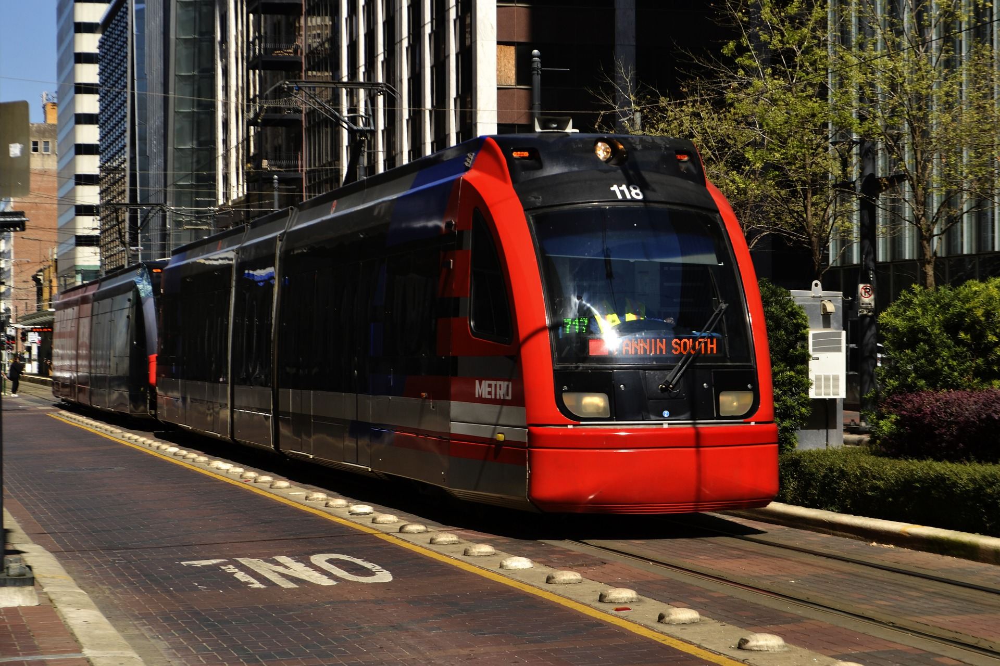

Go Transit Train Service
- GO Transit is a regional public transit system serving the Greater Golden
Horseshoe region of Ontario, Canada. With its hub at Union Station in Toronto, GO Transit's distinctive green
and white commuter rail trains serve a population of more than seven million across an area over 11,000 square
kilometres (4,200 sq mi) stretching from Brantford and Kitchener in the west to Newcastle and Peterborough in
the east, and from Barrie in the north to Niagara Falls in the south. The GO system map shows seven train lines (or corridors), all departing from Toronto's Union Station and
mostly named respectively after the outer terminus of train service. Although colours are assigned in a
consistent fashion to each line in all official media, in colloquial parlance lines are only ever referred to
by their names.

BlueWay Train Service
- Hudson Bay Railway (reporting mark HBRY) is a Canadian short line railway
operating over 1,300 kilometres (810 mi) of track in northeastern Saskatchewan and northern Manitoba.
Blue Way is made up of 627 miles of former Canadian National (CN) trackage, with a network that connects
with CN in The Pas, running north through Manitoba to the Hudson Bay at the Port of Churchill.
Vancouver Sky Train Service
- SkyTrain is a medium-capacity rapid transit system in the Metro Vancouver
Regional District, serving Vancouver, British Columbia, Canada, and surrounding municipalities. SkyTrain has
79.6 km (49.5 mi) of track and uses fully automated trains on grade-separated tracks running on underground
and elevated guideways, allowing SkyTrain to hold consistently high on-time reliability. The name "SkyTrain"
was coined for the system during Expo 86 because the first line (Expo) principally runs on elevated guideway
outside of Downtown Vancouver, providing panoramic views of the metropolitan area. SkyTrain uses the world's
second-longest cable-supported transit-only bridge, known as SkyBridge, to cross the Fraser River.